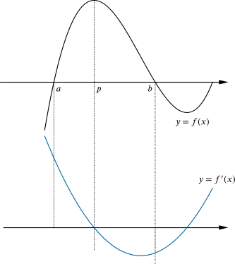
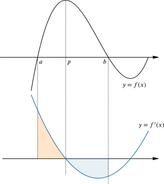
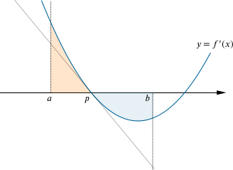

While working on part (c) of Can you find… curvy cubics edition, which asked: “Can you find a cubic curve that has a local minimum when x=−1?”, two students had the following conversation:
A: I can find a cubic with a stationary point at x=−1 by having two of the x-axis intersection points at x=−2 and x=0, because the stationary point is half-way between the two intersection points. I need a third intersection point, too, not between these, so I may as well choose x=4, so my cubic is y=−x(x+2)(x−4) (with a minus sign so the cubic is the right way up).
B: I’m not sure that’s right; is the stationary point really half-way between the x-axis intersection points?
Can you resolve their debate?
A good start could be to check if student A or student B is right in this case.
Student A suggests the function y=−x(x+2)(x−4) has the required features.
Expanding this gives y=8x+2x2−x3.
The x-coordinates of the turning points are the solutions of dydx=0, so 8+4x−3x2=0.
We could solve this to get x=2±27⎯⎯√3, which does not equal −1, or we could just substitute −1 into 8+4x−3x2, getting dydx=1≠0. Either way, student A is wrong in this case.
If student A is right in this case, does this approach always work for finding a cubic with a given stationary (turning) point, or only sometimes?
If student B is right in this case, does student A’s approach ever work?
What exactly is student A’s approach? Can you describe it precisely?
Answering this first will ensure that we agree about what we are trying to show!
It seems that student A’s approach can be described as:
To have a stationary point at x=p, I will put two of my x-axis intercepts at x=a and x=b, where p is midway between a and b, and my third intercept will be at x=c, where c is not between a and b.
This is what we will work with.
To prove that student A’s approach doesn’t always work, we only need to find one counterexample, and we have now done this.
To find out whether student A’s approach ever works, we either need to find an example where it does or to prove that it never works.
We could test several examples, and that might give us some insight (if they all fail) towards a reason why it never works, or it will give us an example of where it does. But if they all fail, that alone does not constitute a proof that student A’s approach never works.
An alternative is to try to prove that student A’s approach never works. If our proof is successful, we will be done, and if it is not, we may discover an example which works instead.
We will use this second route, and try to prove that student A’s approach never works.
We will start by sketching a cubic with x-axis intercepts at a<b<c, and a turning point between a and b at x=p. (We don’t assume that p lies midway between a and b; we want to work out whether this is possible.)
We also sketch the corresponding gradient function (derivative) on a separate graph, lined up; this must be a quadratic function.

In this case, it seems that p is closer to a than to b.
Is this always going to be the case? Is there anything we can see from the graph of the cubic f(x) or its derivative f′(x) which we can use to argue either way?
It might be helpful to think about ways in which the two graphs are related.
The “area under the graph” on the derivative graph equals the change in function value on the original graph. We can write this algebraically as:
∫paf′(x)dx=f(p)−f(a)and∫bpf′(x)dx=f(b)−f(p).
(This uses the second fundamental theorem of calculus.) The first integral is positive, as the derivative graph is above the x-axis, while the second one is negative. Also, as f(a)=f(b)=0, we can write these as
∫paf′(x)dx=f(p)and∫bpf′(x)dx=−f(p).
We can illustrate these areas on our graph:

The (unsigned) shaded areas must be the same because the (signed) area above the graph is f(p) and the (signed) area below the graph is −f(p).
So can p be midway between a and b?

If we draw a tangent to the gradient function graph at (p,0), as shown, we end up with two similar triangles. The one between x=a and x=p has area less than f(p), whereas the one between x=p and x=b has area more than f(p). But if p were midway between a and b, then the two triangles would be congruent, and so have equal areas. This is a contradiction, and so it is impossible for there to be a case where the stationary point is midway between the roots of a cubic.
We might ask questions about this argument. For example:
This argument has been about the left-hand stationary point, the one between x=a and x=b. What about the stationary point between x=b and x=c?
Could the stationary point x=p be midway between x=a and x=c, perhaps?
We have drawn our cubic having a maximum between x=a and x=b. But the original question asked for a minimum at x=−1, not a maximum! So can we modify our argument for a cubic which has a minimum between x=a and x=b and a maximum between x=b and x=c instead?
In this argument, we will write down the formula for a cubic f(x) with three x-axis intercepts (that is, three roots), then differentiate it to find its stationary points. Instead of trying to solve the resulting quadratic, which will be algebraically messy, we will simply test whether the x value midway between two roots is (or can be) a solution of f′(x)=0.
A general cubic with three x-axis intercepts (or three roots) a, b and c can be written as
So f′(a+b2)=0 if and only if a−b=0, or a=b. And a=b means that the cubic has a double (or triple) root at x=a, so the cubic is tangent to the x-axis at this point.
Therefore the original Can you find… curvy cubics edition question may have a solution f(x)=k(x+1)2(x−c) for some suitable values of k and c, but student A’s approach can never work for distinct values of a, b and c: a stationary point of a cubic can never occur midway between two distinct roots of the cubic.
There are some ways to simplify the algebra in this argument.
Firstly, we could notice that a vertical stretch of the function does not change either the x-axis intercepts or the x-coordinates of the stationary points, so we may as well assume k=1.
Secondly, translating the function in the x-direction does not affect the property of having a stationary point lying midway between two x-axis intercepts. Therefore we can translate the function so that one of the intercepts is at the origin, so our cubic is now simply f(x)=x(x−b)(x−c)=x3−(b+c)x2+bcx. This is easier to work with, and so the chances of making an algebraic error are reduced.
How do these arguments compare? What advantages does each one offer?